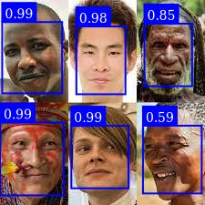

face-detection-node


Face detection with a few options. Based off face-api.
Take a look at the examples folder.
- Clone the project
npm ito install deps.
Recommendation: run the example first, using ts-node examples/examples.ts.
Original Image

Mask (hides face)
The image is stored to the following output ./out/3_mask/096_077_057_testThreeFaces.jpg
Score (confidence)

The image is stored to the following output ./out/3_scored/096_077_057_testThreeFaces.jpg
Many faces

To-Do / Try
- Try this project, that could replace
face-api - Try to use only tensorflow
License
- This code is under MIT